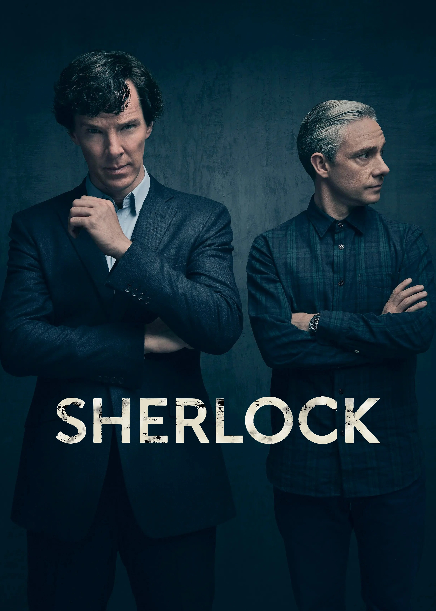
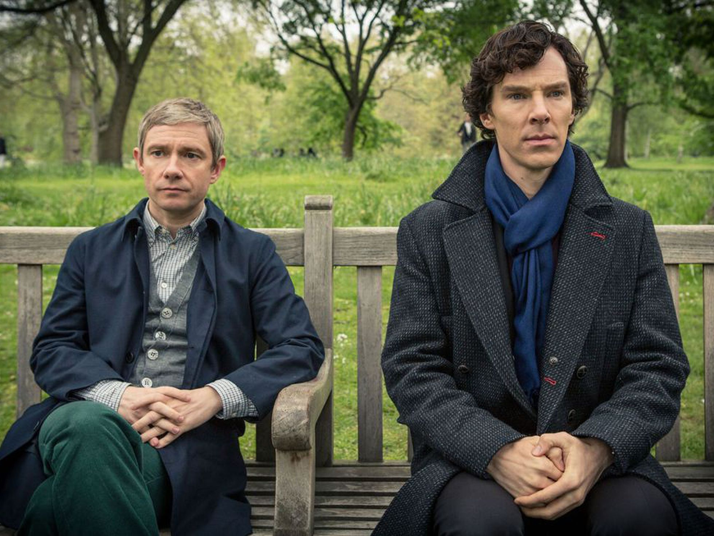
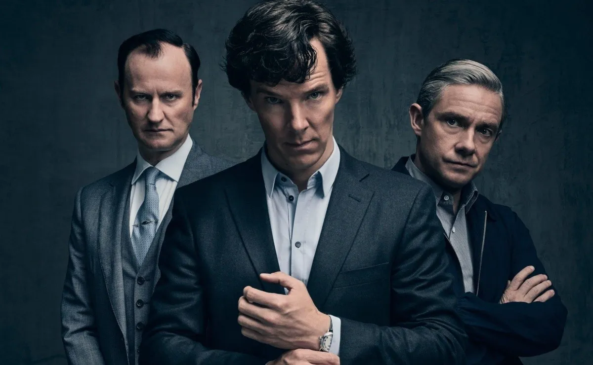

Title
Sherlock (2010-presente) es una serie de televisión británica producida por Hartswood Films para la BBC.
Es emitida por dicha cadena en el Reino Unido y por la PBS en los Estados Unidos. Fue creada por Steven
Moffat y Mark Gatiss; siendo sus productores Sue Vertue y Elaine Cameron y los ejecutivos Beryl Vertue,
Steven Moffat, Mark Gatiss, Bethan Jones y Sue Vertue.

Title
La serie está formada en la actualidad por cuatro temporadas, cada una con tres episodios de 90 minutos
de duración, siendo cada uno de ellos escrito por Steven Moffat, Mark Gatiss o Steve Thompson (este sólo
en las tres primeras). Los directores que han trabajado han sido Paul McGuigan, Euros Lyn, Toby Haynes,
Jeremy Lovering, Colm McCarthy, Nick Hurran, Douglas Mackinnon, Rachel Talalay, Benjamin Caron.

Title
La tercera temporada empezó su rodaje en marzo de 2013, habiéndose estrenado el 1 de enero de 2014 por
BBC One.
La cuarta temporada se estrenó el 1 de enero de 2017 a la BBC.
La emisión en España de las tres primeras temporadas se realizó por TNT, emitiéndose habitualmente cada
episodio una semana después de su estreno. Los derechos para la cuarta temporada fueron adquiridos por
Netflix España, publicando los episodios al día siguiente de su emisión.
Title
Sherlock es una actualización contemporánea de las obras literarias del personaje de Sir Arthur Conan
Doyle. Ubicada en la Londres del siglo XXI, la serie sigue los pasos del excéntrico detective Sherlock
Holmes junto a su compañero John Watson, en su búsqueda para resolver los brutales crímenes que se van
desarrollando. Sus insuperables habilidades de deducción y su arrogante distanciamiento emocional le
convierten en el perfecto detective, pero pronto descubrirá que hay alguien más que le sigue los pasos;
Jim Moriarty.
En esta versión moderna del exitoso detective y su fiel camarada, muchas cosas se mantienen como lo son
en el libro, sin embargo otras cambian no sólo en tiempo, sino que también en sentido. John Watson
mantiene un blog virtual, en el cual publica los casos más importantes e interesantes de Holmes, y tiene
bastantes seguidores. Por supuesto, Sherlock no está completamente de acuerdo con esto. En lugar de
movilizarse en carruaje lo hacen en coche, utilizan celulares y no cartas o telegramas, etc.
Sin embargo es una excelente adaptación actualizada de los increíbles casos creados por Sir Arthur Conan
Doyle, siendo incluso calificada como una obra maestra.
Episodios
Actualmente la serie consta de un total de 10 episodios de 90 minutos cada uno, repartidos en tres
temporadas de tres episodios, exceptuando la tercera, la cual posee un episodio especial, "La novia
abominable. En 2017 se emitirán tres episodios más, formando la cuarta temporada.
Reparto
Sus protagonistas son Benedict Cumberbatch en el papel del detective asesor Sherlock Holmes y Martin
Freeman como el Dr. John Watson. El reparto lo completan Una Stubbs como la señora Hudson, Rupert Graves
como Greg Lestrade, Louise Brealey como Molly Hooper, Mark Gatiss como el hermano mayor de Sherlock
Mycroft Holmes y Andrew Scott como Jim Moriarty.
❮
❯